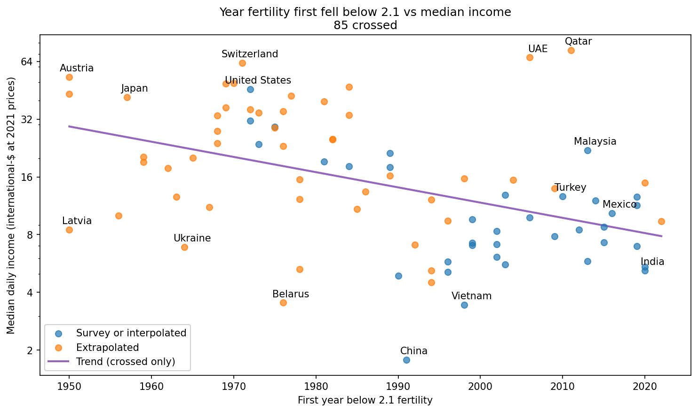

The Low-fertility Club Is Less Exclusive#
Summary: A simple analysis suggests that the median daily income where countries cross below replacement fertility has fallen from about $32 per day in 1950 to about $8 now.
In June 2026 The Economist reported that India’s total fertility rate has fallen to 1.9, which is below replacement rate (generally considered 2.1). They note:
Over two-thirds of all countries are now below the replacement rate. Middle-income ones like Brazil, Iran, Thailand and Turkey have been well below it for years. Poorer countries are steadily joining their ranks.
So far, this is a pattern well understood by demographers: as countries get richer, they often go through a demographic transition from high to low fertility. But The Economist also notes:
In India, fertility fell below the replacement rate at a much lower level of development than most countries: its GDP per person at purchasing power parity was less than half that of Malaysia, Mexico and Turkey at the same point.
And that suggests a pattern that is less well understood (as far as I can tell as an observer of demography): the income level where the demographic transition occurs may be coming down.
The Price of Admission#
I collected two datasets from Our World in Data:
Fertility rate: births per woman — annual total fertility rates from the Human Fertility Database (before 1950) and UN World Population Prospects (1950–2023).
Median income or consumption per day — household-survey estimates from the World Bank Poverty and Inequality Platform, expressed in international dollars at 2021 prices.
The datasets include 85 countries where fertility has dropped below 2.1; for each one, I looked up the year they crossed this threshold for the first time. A few countries dropped below replacement during the Depression or World War II and then rebounded, so I discarded temporary transitions from before 1950.
Then I looked up the income of those countries when they dropped below replacement. The income data is sparse, so I interpolated when possible and extrapolated when necessary.
The following scatter plot shows the result: the year of first transition on the x-axis, median daily income on the y-axis (log scale), and one point for each country. The extrapolated points are less reliable, so they’re shown in a different color.
{kind=link}

Fig. 1 Year fertility first fell below 2.1 versus median daily income at the crossing year. Blue points use reported or interpolated income; orange points use extrapolated income. The red line is a trend fit to log(income) versus year.#
The trend suggests that the typical income at replacement fertility has decreased almost four-fold, from about $32 per day in 1950 to a little more than $8 now.
A country above the trend line is “late” in the sense that it made the transition at a higher income than typical. By that standard, Switzerland and the United States were late, the UAE and Qatar were very late, and the countries mentioned by The Economist were only a little behind schedule.
A country below the line is “early” in the sense that it made the transition at a lower income level than expected. As The Economist suggests, India was early — but not by much. Several former Soviet states were much earlier, and the biggest outlier is China, which implemented the one-child policy in 1979 and fell below replacement in 1991, when median income was less than $2 per day.
The Economist asserts that “The UN, which tries to predict such things, has failed to account for the speed of fertility decline in its central forecast for the global population.” If so, the peak of world population will probably come sooner than predicted and at a lower total.
Technical and Cultural Diffusion#
To understand why the income level at replacement fertility is falling, it helps to think about the likely causes of demographic transition, which I remember with the acronym HERO:
Health, especially maternal and childhood survival,
Education, especially for girls and women,
Rights and autonomy, especially for women,
Opportunity.
If these conditions drive the demographic transition, why might countries achieve them at lower income levels than before?
One likely factor is technical diffusion, especially public health, medicine, and agriculture. Many of the health interventions that reduce childhood mortality are inexpensive, including hand washing, vaccination, clean water, breastfeeding guidance, oral rehydration therapy, and mosquito control. They depend on public policy and social norms more than income. And the availability of contraception helps people have fewer children, when desired, especially where women have greater rights and autonomy.
The Economist suggests that cultural transmission might be another reason, as television and smartphones bring the aspirations and “lifestyles of richer peers into poorer places.”
For all of these reasons, income may become a less important predictor of fertility than it once was, and the demographic transition might increasingly be limited, or accelerated, by other factors.
Notes#
A limitation of this analysis is survivorship bias: the scatter plot only includes countries that have already crossed below replacement fertility. Countries that have not yet crossed are excluded, and it is hard to say what effect that omission has on the trend. A more complete analysis would treat the transition as a time-to-event problem and include countries that have not yet dropped below replacement fertility.
The analysis notebook is in the Probably Overthinking Blog repository.
Data sources. Both datasets come from Our World in Data.
Fertility rate: births per woman — annual total fertility rates, 1891–2023, compiled from the Human Fertility Database (before 1950) and UN World Population Prospects (1950 onward).
Median income or consumption per day — household-survey estimates from the World Bank Poverty and Inequality Platform, expressed in international dollars at 2021 prices. Coverage is sparse and irregular compared with the annual fertility series.